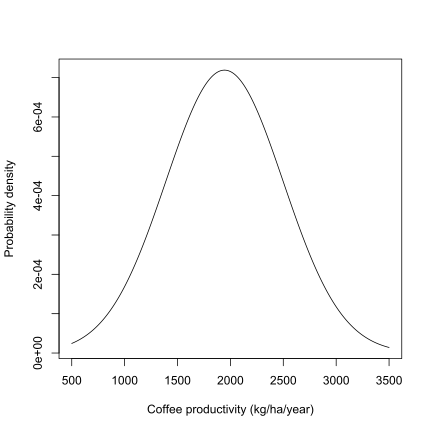
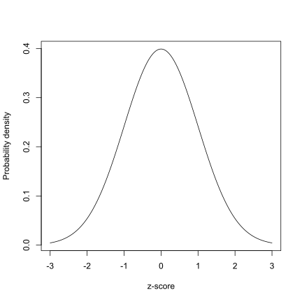
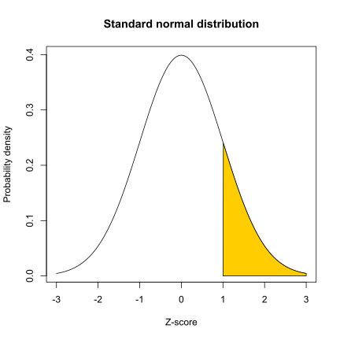
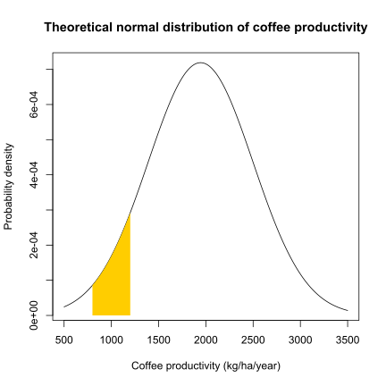
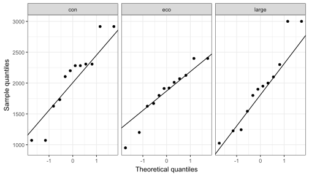
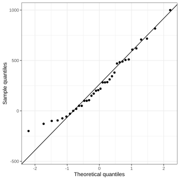
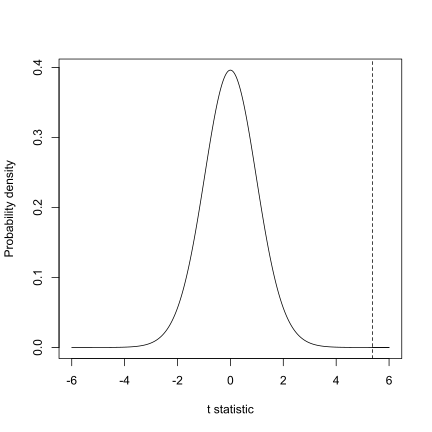
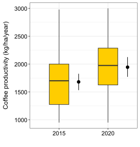

![]()
Show me the code
library(readxl)
library(tidyverse)In this tutorial, we will enter the world of inferential statistics. We will use R to perform our first statistical test! By the end of this tutorial, you should be able to calculate z-scores and tail probabilities, check the normality assumption of the data, calculate 95% confidence intervals, perform a paired t-test, and interpret its results in R.
Let’s get started!
To work on this tutorial, you will need to load the readxl and tidyverse packages. You can load them using library().
library(readxl)
library(tidyverse)Start by important the data used in this course (see previous tutorial).
#Option 1 (csv file)
data <- read_csv("gss_statistics_master_data_set2.csv")
#Option 2 (Excel file)
data <- read_excel("gss_statistics_master_data_set2.xlsx")The tutorial dataset contains observations for 36 farms. The average coffee productivity measured across all farms was 1944.1 kg/ha/year and the standard deviation was 554.8 kg/ha/year. Assuming that coffee productivity data follow a normal distribution (we will explain later in this tutorial how to assess this assumption), the corresponding theoretical normal distribution is shown in Figure 1.

Now, suppose that we are interested in calculating the probability that a randomly selected farm has a coffee productivity greater or smaller than a specific productivity value. To answer such a question, we first need to calculate a z-score.
A z-score is a standardized measure that indicates how far a specific value or observation (\(x\)) is from the mean (\(\bar{x}\)) of a dataset, expressed in units of standard deviation (\(s\)). A positive z-score means the value is above the mean, while a negative z-score indicates it is below the mean.
\[ z = \frac{x - \bar{x}}{s}\ \tag{1}\]
If the original variable (X) follows a normal distribution, the z-scores calculated from this variable will follow a standard normal distribution (mean of zero and standard deviation of one) (Figure 2).

Using Equation 1, calculate the z-score for all coffee productivity values (coffee_prod variable).
zscores <- (data$coffee_prod - mean(data$coffee_prod))/sd(data$coffee_prod)Suppose that we want to calculate the probability that a randomly selected farm has a coffee productivity greater than 2500 kg/ha/year. To answer this question, we first need to convert this value into a z-score (Equation 1).
Calculate the z-score for a coffee productivity of 2500 kg/ha/year.
zscore <- (2500 - mean(data$coffee_prod))/sd(data$coffee_prod)We now need to calculate the probability of a value of the standard normal taking a value at least as large as the calculated z-score (1.002). Graphically, this corresponds to the area under the curve highlighted in yellow in Figure 3. In R, this probability can be obtained using the function pnorm(). You can also calculate this probability using the table of z values provided on Brightspace. Make sure you can use both options for the exam.

The pnorm() function takes four main arguments:
q: a z-score value (in our case: 1.002)
mean: the mean value of the normal distribution (should be zero for the standard normal, which is the default value)
sd: the standard deviation of the normal distribution (should be one for the standard normal, which is the default value)
lower.tail: a logical argument (can be either TRUE or FALSE). If set to TRUE, probabilities are \(P(X \le x)\). If set to FALSE, probabilities are \(P(X > x)\)
Calculate the probability that a randomly selected farm has a coffee productivity greater than 2500 kg/ha/year. Do this using pnorm() and the table of z values provided on Brightspace.
#Option 1
pnorm(zscore, lower.tail = FALSE)
#Option 2
1-pnorm(zscore, lower.tail = TRUE)The probability that a randomly selected farm has a coffee productivity greater than 2500 kg/ha/year is 15.8%.
Calculate the probability that a randomly selected farm has a coffee productivity comprised between 800 and 1200 kg/ha/year. Graphically, this means that you need to calculate the area under the curve highlighted in yellow in Figure 4. Do this using pnorm() and the table of z values provided on Brightspace.

#Calculate Z-scores
low_z <- (800 - mean(data$coffee_prod))/sd(data$coffee_prod)
high_z <- (1200 - mean(data$coffee_prod))/sd(data$coffee_prod)
#Calculate tail probabilities
p_low_z <- pnorm(low_z, lower.tail = TRUE)
p_high_z <- pnorm(high_z, lower.tail = TRUE)
#Calculate the probability that a randomly selected farm has a coffee productivity comprised between 800 and 1200 kg/ha/year
p_high_z - p_low_zThe probability that a randomly selected farm has a coffee productivity comprised between 800 and 1200 kg/ha/year is 7%
Many statistical tests, including t-tests, assume that the data are normally distributed within each group being compared. It is therefore important to check this assumption before conducting a statistical test. If your data do not follow a normal distribution, there are several approaches you can take. One option is to use a non-parametric test or model that does not assume normality (this will be discussed later in this course). Another option is to transform the data to make it more normally distributed, for example, using a log, or square root transformation, before applying a parametric test.
Normality can be assessed using both formal statistical tests, such as the Shapiro-Wilk test, and graphical tools, such as histograms and Q–Q plots. It is often best to use them in combination because the outcome of Shapiro-Wilk’s test is sensitive to sample size. With small sample sizes, the test has low statistical power, meaning it may fail to detect departures from normality even when the data are not necessarily normal. With large sample sizes, the test becomes extremely sensitive, so even very small deviations from normality can lead to a significant result.
In the Shapiro-Wilk’s test, the null hypothesis is that the data follow a normal distribution, while the alternative hypothesis is that they do not. Note that this test requires a sufficient sample size to be reliable (20-30 observations).
In R, a Shapiro-Wilk’s normality test can be carried out using shapiro.test(). The only argument to provide is a vector of data values (which may contain missing values).
Use the Shapiro-Wilk’s test to check that coffee productivity data (coffee_prod variable) is normally distributed within each farm type (farm_type variable). What can you conclude from these tests?
#Filter data for con farms
data_con <- dplyr::filter(data, farm_type == "con")
#Shapiro-Wilk's test
shapiro.test(data_con$coffee_prod)
Shapiro-Wilk normality test
data: data_con$coffee_prod
W = 0.9058, p-value = 0.1884#Filter data for eco farms
data_eco <- dplyr::filter(data, farm_type == "eco")
#Shapiro-Wilk's test
shapiro.test(data_eco$coffee_prod)
Shapiro-Wilk normality test
data: data_eco$coffee_prod
W = 0.93314, p-value = 0.4145#Filter data for con farms
data_large <- dplyr::filter(data, farm_type == "large")
#Shapiro-Wilk's test
shapiro.test(data_large$coffee_prod)
Shapiro-Wilk normality test
data: data_large$coffee_prod
W = 0.93119, p-value = 0.3929For all tests, the calculated p-value is much greater than 0.05. Therefore, we accept the null hypothesis that coffee production data follow a normal distribution within each farm type.
Given the small number of coffee productivity observations available for each farm type in our dataset, creating histograms (one per farm type) is not very informative at this stage. Make sure you understand how these graphs are constructed and how to interpret them using the content of the lectures. We will revisit histograms later in the course, once we are more familiar with the concept of residuals.
Another important graphical tool to assess whether data follow a normal distribution is the Q-Q plot, short for Quantile-Quantile plot. A Q-Q plot compares the quantiles of the observed data to the quantiles expected under a normal distribution. If the data are approximately normally distributed, the points in the plot will lie close to a straight diagonal line. Systematic deviations from this line, such as curvature or extreme points at the ends, would indicate departures from normality.
In base R, you can create Q-Q plots by combining the functions qqnorm() and qqline(). However, since we need to create a Q-Q plot separately for each farm type, it is easier and faster to use ggplot2 functions to do this. In ggplot2, Q-Q plots are created using stat_qq() to plot the sample quantiles against the theoretical quantiles of a normal distribution, and stat_qq_line() to add a reference line. The function stat_qq() requires the sample argument, which specifies the variable for which the quantiles are to be computed and compared to the theoretical distribution (in our case: coffee_prod).
In our example, where we compare coffee productivity among farms, ggplot2 makes it easy to create a separate Q-Q plot for each farm type using faceting, without writing much additional code. Faceting can be done with facet_wrap() or facet_grid(), allowing you to visualize a Q-Q plot for each farm type side by side.
facet_grid() forms a matrix of panels defined by row and column variables. It is particularly useful when you have two discrete variables and all variable combinations exist in the data.
facet_wrap() is generally used when you want to create figure panels based on a single discrete variable (which is the case in this example).
Create Q-Q plots to check that coffee productivity data (coffee_prod variable) is normally distributed within each farm type (farm_type variable). What can you conclude from these graphs?
ggplot(data, aes(sample = coffee_prod)) +
stat_qq() +
stat_qq_line() +
facet_wrap(~ farm_type) +
theme_bw() +
xlab("Theoretical quantiles")+
ylab("Sample quantiles")
For Eco and Large farms, the points lie closer to the reference line than for Con farms (with a few exceptions), indicating that coffee productivity data from Con farms may deviate more from normality than data from the other farm types. However, these patterns should be interpreted with caution, as the sample size is small (12 observations per farm).
A 95% confidence interval (95% CI) is a range of values that is intended to contain the true population parameter (such as the mean value of the population) with a specified level of confidence (here: 95%). Its meaning is based on repeated sampling: if we were to take 100 random samples from the same population and compute a 95% confidence interval for each sample, approximately 95 of those intervals would include the true population mean.
When sample size is small (\(n<30\)), confidence intervals are calculated using quantile values (also referred to as critical values) of Student’s t distribution with \(n-1\) degrees of freedom (Equation 2). As the sample size increases, the t distribution converges to the standard normal distribution. For larger sample sizes (\(n>30\)), the critical values from the t distribution are very close to those from the normal distribution, so confidence intervals based on either distribution will be nearly identical.
Confidence intervals are always two-tailed because our estimate of the population mean (which is the sample mean, \(\bar{x}\)) may be larger or smaller than the true population mean (\(\mu\)), which is often unknown. To calculate a 95% CI, we therefore need to calculate the quantile value of Student’s t distribution associated with \(\alpha=0.05/2=0.025\). In R, this can be done with the qt() function.
\[ \bar{x} \pm t_{0.975,\,n-1} \cdot \frac{s}{\sqrt{n}} \tag{2}\]
The qt() function takes three main arguments:
p: a vector of probabilities (for a 95% CI, it will be 0.975)
df: the number of degrees of freedom (for a 95% CI, it will be \(n-1\))
lower.tail: a logical argument (can be either TRUE or FALSE). If set to TRUE, probabilities are \(P(X \le x)\). If set to FALSE, probabilities are \(P(X > x)\)
Calculate the 95% confidence interval for coffee productivity (coffee_prod variable) for each farm type. Do this both manually (using the table of critical values of Student’s t distribution available on Brightspace) as well as using the qt() function in R. Make sure you are able to use both methods for the exam.
#Calculate the number of observations for each farm type
n_con <- nrow(dplyr::filter(data, farm_type == "con"))
n_eco <- nrow(dplyr::filter(data, farm_type == "eco"))
n_large <- nrow(dplyr::filter(data, farm_type == "large"))
#Calculate the mean value of coffee productivity in each farm type
mean_con <- mean(dplyr::filter(data, farm_type == "con")$coffee_prod)
mean_eco <- mean(dplyr::filter(data, farm_type == "eco")$coffee_prod)
mean_large <- mean(dplyr::filter(data, farm_type == "large")$coffee_prod)
#Calculate the standard deviation value of coffee productivity in each farm type
sd_con <- sd(dplyr::filter(data, farm_type == "con")$coffee_prod)
sd_eco <- sd(dplyr::filter(data, farm_type == "eco")$coffee_prod)
sd_large <- sd(dplyr::filter(data, farm_type == "large")$coffee_prod)
#Calculate lower limits of 95% CI for each farm type
low_CI_con <- mean_con - qt(0.975, n_con-1)*sd_con/sqrt(n_con)
low_CI_eco <- mean_eco - qt(0.975, n_eco-1)*sd_eco/sqrt(n_eco)
low_CI_large <- mean_large - qt(0.975, n_large-1)*sd_large/sqrt(n_large)
#Calculate upper limits of 95% CI for each farm type
up_CI_con <- mean_con + qt(0.975, n_con-1)*sd_con/sqrt(n_con)
up_CI_eco <- mean_eco + qt(0.975, n_eco-1)*sd_eco/sqrt(n_eco)
up_CI_large <- mean_large + qt(0.975, n_large-1)*sd_large/sqrt(n_large)95% confidence interval for Con farms: [1686.9-2449.4] kg/ha/year
95% confidence interval for Eco farms: [1563.9-2116.5] kg/ha/year
95% confidence interval for Large farms: [1521.6-2326.5] kg/ha/year
We want to determine whether coffee productivity measured in 2020 (after an intervention from extension services) is higher than that measured in 2015 (before an intervention from extension services). In other words, did the intervention increase coffee productivity on farms?
In this example, the samples are paired because coffee productivity was measured on the same farms in two different years (before and after an intervention). This comparison also involves two groups: productivity measured in 2015 versus productivity measured in 2020. To answer our research question, a paired t-test seems appropriate.
Based on the information above, write a null and an alternative hypothesis for the paired t-test. Is the hypothesis directed or undirected?
The hypotheses for this test would be as follows:
Null hypothesis: there is no difference in coffee productivity between 2015 and 2020.
Alternative hypothesis: coffee productivity measured in 2020 is higher than coffee productivity measured in 2025 (which is what we would expect if the intervention had been successful).
This is an example of a directed hypothesis (right-tailed), because we expect an increase in productivity following the intervention.
Before running the test, we must first check whether our data meet the assumptions of a paired t-test (normality and homoscedasticity).
Earlier in this tutorial, you learned about methods for checking whether data follow a normal distribution (Shapiro-Wilk’s test and Q-Q plots). We can use the same methods here, but first we need to calculate the differences in coffee productivity between 2020 and 2015 for each farm (because we want to perform a paired t-test). We can then check whether these differences follow a normal distribution.
coffee_prod variable) and 2015 (coffee_prod_past variable). Store these differences in a new column called coffee_prod_diff in data.data$coffee_prod_diff <- data$coffee_prod - data$coffee_prod_pastshapiro.test(data$coffee_prod_diff)
Shapiro-Wilk normality test
data: data$coffee_prod_diff
W = 0.96273, p-value = 0.2606ggplot(data, aes(sample = coffee_prod_diff)) +
stat_qq() +
stat_qq_line() +
theme_bw() +
xlab("Theoretical quantiles")+
ylab("Sample quantiles")
The p-value of Shapiro-Wilk’s test is higher than the significance level (0.05). Therefore, we fail to reject the null hypothesis and can reasonably assume that the data are normally distributed. The Q-Q plot suggests a slight skew in the data, but because the Shapiro-Wilk test is non-significant and most points lie close to the reference line, the normality assumption is considered acceptable.
Does coffee productivity measured in 2015 and 2020 show equal variances?
To answer this question, we can use Bartlett’s test. The null hypothesis of this test is that the groups have equal variance, while the alternative hypothesis is that they have different variances.
In R, this test can be carried out using the bartlett.test() function, which requires two main arguments:
x: a numeric vector of data values
g: a vector or factor object giving the group for the corresponding elements of x
To run this test, we would therefore need to reorganise the data a bit, so that we can have a data frame with a column for x (the coffee productivity values) and a column for g (the groups: 2015 and 2020).
bartlett.test(). One way to do this is to create a new data frame (data_bartlett) using the function data.frame() to combine variables into a single data frame. This data frame needs to contain two columns: x and g (but you could also name them differently). The column x contains the response variable and is created by concatenating (c()) coffee productivity values from two different years (coffee_prod_past and coffee_prod). The column g defines a grouping variable and is generated using rep(), which repeats the values 2015 and 2020 for each row in the original dataset (nrow(data)).data_bartlett <- data.frame(x = c(data$coffee_prod_past, data$coffee_prod),
g = rep(c(2015, 2020), each=nrow(data)))bartlett.test(x = data_bartlett$x,
g = data_bartlett$g)
Bartlett test of homogeneity of variances
data: data_bartlett$x and data_bartlett$g
Bartlett's K-squared = 1.2009, df = 1, p-value = 0.2731The p-value of Bartlett’s test is larger than the significance threshold (0.05). Therefore, we accept the null hypothesis that coffee productivity data measured in 2015 and 2020 have equal variances.
Now that we know that our data satisfy the underlying assumptions of a paired t-test, we can carry out the statistical test.
First, let’s do this using the “slow way” by manually computing the test statistic (\(t\)) and the p-value of the test.
For a paired t-test, the test statistic (\(t\)) can be calculated using Equation 3, where \(\bar{v}\) is the average difference in coffee productivity, \(s_v\) is the standard deviation of the differences, and \(n\) is the number of paired observations.
\[ t = \frac{\bar{v}}{s_v / \sqrt{n}} \tag{3}\]
Calculate the value of the test statistic (\(t\)) using Equation 3.
t <- mean(data$coffee_prod_diff)/(sd(data$coffee_prod_diff)/sqrt(nrow(data)))The value of the test statistic is 5.372
We can now calculate the p-value associated with this test. We can do this by using the table of critical values of Student’s t distribution available on Brightspace or by using the pt() function in R. Both approaches should lead you to the same result. Make sure you can use both approaches for the exam.
To calculate this p-value, it is important to remember that we are testing a directed (one-sided) hypothesis, as we expect coffee productivity in 2020 to be higher than in 2015. Graphically, this corresponds to calculating the area under the distribution curve to the right of the dashed vertical line shown in Figure 5. This area represents the p-value and appears to be very small.

In R, this probability can be calculated using the function pt(), which takes three main arguments:
q: a vector of quantiles (in this example, it is the value of the observed t statistic)
df: the number of degrees of freedom (\(n-1\))
lower.tail: a logical argument (can be either TRUE or FALSE). If set to TRUE, probabilities are \(P(X \le x)\). If set to FALSE, probabilities are \(P(X > x)\)
Calculate the p-value of the paired t-test using pt(). Make sure that you also know how to use the table of critical values of Student’s t distribution to obtain this p-value. What can you conclude from this test?
p <- pt(t, df=nrow(data)-1, lower.tail=FALSE)The calculate p-value is 2.6^{-6}, which is much lower than the significance threshold (0.05). Therefore, we reject the null hypothesis that there is no difference in coffee productivity between 2015 and 2020. We conclude that the intervention led to an increase in coffee productivity. On average, coffee productivity in 2020 increased by 263.9 kg/ha/year.
Of course, t-tests can be easily performed in R using the t.test() function. Here are the most important arguments of this function:
x and y: the numeric vectors of data to compare (one vector per group)
paired: a logical value (TRUE or FALSE) indicating whether the samples are paired (TRUE) or independent (FALSE)
alternative: specifies the type of test; "two.sided" (default), "greater", or "less"
mu: the expected difference between group means if the null hypothesis is true
var.equal: a logical variable indicating whether to treat the two variances as being equal. If TRUE then the pooled variance is used to estimate the variance otherwise the Welch (or Satterthwaite) approximation to the degrees of freedom is used.
conf.level: the confidence level for the interval (default is 0.95)
Use the t.test() function to perform the statistical test. What information is shown in the R output? What can you conclude from this test? Write a few sentences to report this result, including the test statistic, p-value, sample size (degrees of freedom), and interpretation.
t.test(x = data$coffee_prod,
y = data$coffee_prod_past,
paired = TRUE,
alternative = "greater",
mu = 0,
var.equal = TRUE)
Paired t-test
data: data$coffee_prod and data$coffee_prod_past
t = 5.3716, df = 35, p-value = 2.602e-06
alternative hypothesis: true mean difference is greater than 0
95 percent confidence interval:
180.8656 Inf
sample estimates:
mean difference
263.8594 We conducted a paired t-test to assess if an intervention from extension services resulted in increased coffee productivity (Figure 6). Therefore, coffee productivity was measured in the same farms before and after the intervention (n=36 farms). The difference between coffee productivity before and after the intervention was significant (t= 5.37; p-value < 0.001) indicating that the intervention had a positive effect. On average, coffee productivity in 2020 was 15.7% greater than in 2015.
